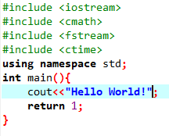

Ponieważ jest to wymagane w zadaniu zamierzam napisać tutaj dużo tekstu który kompletnie nie ma związku z zadaniem. Dodatkowo jako ciekawoskę na początku chciałem napisać program wypisujący obecną godzinę. Niestety C++ to za trudny język nawet dla ludzi utalentowanych. Nie sugeruje w poprzednim zdaniu ze jestem utalentowany i tak nie uważam. Skończyła mi się wena twórcza więc wstawię tutaj inwokacje z popularnej i lubianej przez nauczycieli książkę "Pan Tadeusz" Adama Mickiewicza:
Litwo! Ojczyzno moja! ty jesteś jak zdrowie:
Ile cię trzeba cenić, ten tylko się dowie,
Kto cię stracił. Dziś piękność twą w całej ozdobie
Widzę i opisuję, bo tęsknię po tobie.
Panno święta, co Jasnej bronisz Częstochowy
I w Ostrej świecisz Bramie! Ty, co gród zamkowy
Nowogródzki ochraniasz z jego wiernym ludem!
Jak mnie dziecko do zdrowia powróciłaś cudem
(Gdy od płaczącej matki, pod Twoją opiekę
Ofiarowany, martwą podniosłem powiekę;
I zaraz mogłem pieszo, do Twych świątyń progu
Iść za wrócone życie podziękować Bogu),
Tak nas powrócisz cudem na Ojczyzny łono.
Tymczasem przenoś moją duszę utęsknioną
Do tych pagórków leśnych, do tych łąk zielonych,
Szeroko nad błękitnym Niemnem rozciągnionych;
Do tych pól malowanych zbożem rozmaitem,
Wyzłacanych pszenicą, posrebrzanych żytem;
Gdzie bursztynowy świerzop, gryka jak śnieg biała,
Gdzie panieńskim rumieńcem dzięcielina pała,
A wszystko przepasane jakby wstęgą, miedzą
Zieloną, na niej z rzadka ciche grusze siedzą.